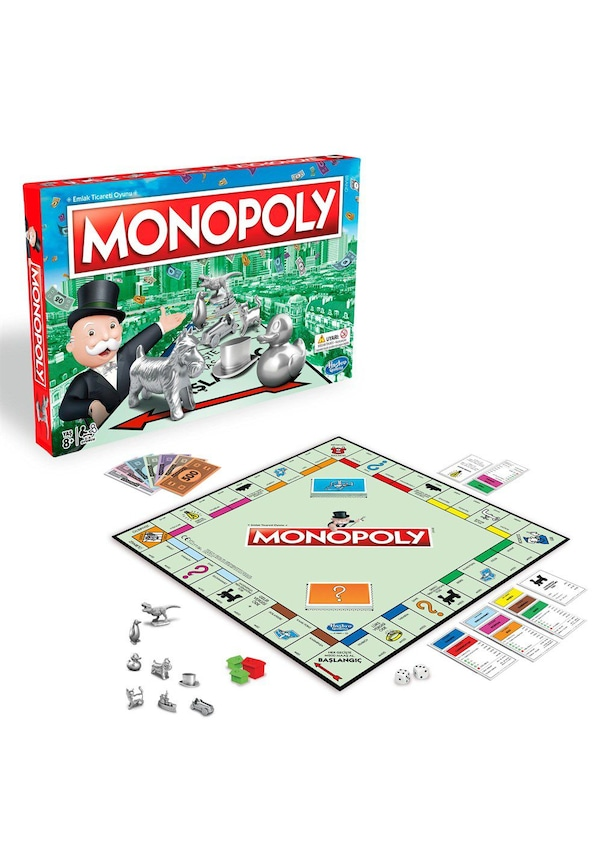

Monopoly Nedir ?
1929 yılında Charles Darrow tarafından bulunan Monopoly oyunu, emlakçılık üzerine kurulu zar ile oynanan bir kutu oyunudur.
7 Şubat 1935 tarihinde Parker Brothers isimli bir şirket tarafından piyasaya sürülen Monopoly, günümüzde en çok oynanan ticari masa oyunu olarak nitelendirilmektedir
Monopoly Nasıl Oynanır?
En az iki en fazla da sekiz kişiyle oynanabilen Monopoly'de hedef oyun alanındaki en çok mülkü satın alarak rakiplerinizin iflas etmesini sağlamaktır.
İlk olarak oyununuzu kutusunda yazan şekle uygun olarak düz bir alana kurarak işe başlayın. Ardından her bir oyuncu farklı şekillerde olan piyonlardan birini seçmeli.
Oyunu başlatmak için her oyuncu sırayla zar atar ve en büyük sayıyı atan oyuncu birinci oyuncu olur. Oyunculardan biri banka görevini üstlenmek zorundadır.
Bu oyuncu diğer oyuncuların alım, satım ve ödeme işlemlerini yönetir.
Başlangıçta kutuda yazana göre oyunculara bir miktar para verilir. Bu miktar oyunun çeşidine göre değişkenlik görmektedir.
Ardından oyuncular sırayla zar atarak karelerde piyonunu hareket ettirir. Zarda çıkan sayı kadar ilerleyen oyuncu durduğunda eğer bir mülke geldiyse orayı satın alabilir ya da pas geçebilir.
Oyuncu üzerinde bulunduğu mülkü satın almak istemiyorsa açık arttırmaya sunarak en yüksek bedeli ödeyen oyuncuya orayı satmalıdır.
Öte yandan; oyuncu bir görevin üzerine geldiyse bu görevi de tamamlamak zorundadır.
Oyun ilerledikçe kendinize özel alanlar kurarak yeni mülkler satın alabilir ve takas gibi işlemlerle de oyunun devamlılığını sağlayabilirsiniz.
Monopoly'de kazanan olmak için en fazla gayrimenkule sahip olmalı ve iflas etmemelisiniz.
Monopoly KURALLARI NELERDİR?
-
Monopoly'de oyuna başlayacak kişi zar atarak belirlenir. Eğer oyuncu çift zar atarsa tekrar zar atma hakkına sahiptir.
-
Bir oyuncu tek turda çift zar attıysa kodese girmek zorundadır.
-
Oyuncu kodese girdiyse üç tur beklemelidir ancak kodesten çık kartı varsa onu kullanarak ya da ücret ödeyerek kodesten beklemeden çıkabilir.
-
Oyuncu üzerine geldiği mülkü satın almak zorunda değildir; dilerse pas hakkını kullanabilir.
-
Oyun süresi kişilere göre değişken bir şekilde ilerleyebilir.
Monopoly'De Ne Kadar Para Verilir?
Oyunda toplamda 145 bin Monopoly parası bulunmakla beraber; oyunun başında her bir oyuncuya 2 adet 500, 4 adet 100, 1 adet 50, 1 adet 20, 2 adet 10 ve 1 adet 5 ve 5 adette 1 Monopoly parası dağıtılmaktadır.Yani her oyuncuya oyun başında toplamda 1500 Monopoly parası verilmektedir.
Monopoly Çeşitleri Nelerdir?
Yıllardır severek oynanan Monopoly, her zevke uygun olacak şekilde pek çok çeşitte piyasada yer edinmektedir. İşte monopoly çeşitleri;